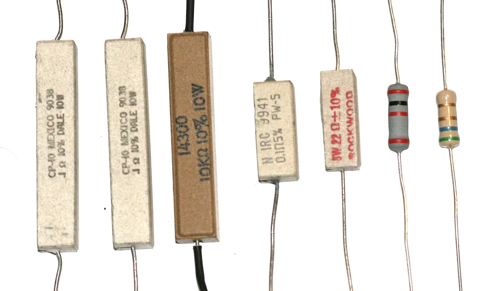
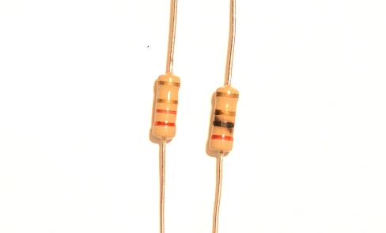

What do Resistors Do?
Resistors may seem mysterious or complicated at first, but as you learn the properties of resistors it will begin to be less complicated and mysterious. Resistors limit the flow of current and drop voltage. Resistors help control current and voltage. If you take a standard flashlight bulb at 6 volts and connect a 6-volt battery the bulb will glow like it should. But if you connect a 12-volt battery to it the bulb will get too much current and burn out. If you have a flashlight bulb rated at 6 volts and 850ma and you connect a 6-volt battery to the bulb it will work. The bulb has about 7- ohms. But if you connect a 12-volt battery to it the bulb will use 1700 ma which will burn out the bulb. There is not enough resistance in the bulb to prevent too much current. You can fix the problem by adding resistance to the circuit. If you add a 7-ohm resistor, you will have a total of fourteen ohms and each 7-ohm resister will have six volts and allow the right amount of current, and the bulb will glow and not burn out. Resistors help solve problems of too much current or too much voltage. If you used a voltmeter to measure voltage across the 7-ohm resistor you will find that it also has 6 volts across it. The 6-volt bulb is rated as 6 volts not 12 volts. When you add a 7-ohm resistor to a 12-volt circuit you keep the bulb using only 6 volts like it should. The two resistances function as a voltage divider. The voltage and current of a circuit are related though an equation. The equation is Voltage = current x resistance.

Problems
Resistors can start fires if too much current goes through them. In the picture above I put too much current in to the resistor on the right hand side. You can see the burn mark. It you need a 1 watt resistor buy a higher wattage resistor. 2 watts would not be a bad choice.